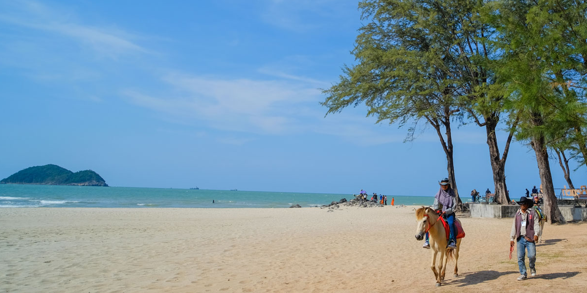

ชายหาดสัญลักษณ์ของจังหวัดสงขลา • บ้านของนางเงือกทอง

หาดสมิหลา หรือ หาดแหลมสมิหลา เป็นสถานที่ท่องเที่ยวสำคัญและมีชื่อเสียงที่สุดแห่งหนึ่งของจังหวัดสงขลา ตั้งอยู่ในเขตเทศบาลนครสงขลา อำเภอเมืองสงขลา ห่างจากศาลากลางจังหวัดเพียงประมาณ 1 กิโลเมตร
คำว่า “สมิหลา” มาจากภาษาสันสกฤต “สมิ” แปลว่า ลม และ “หลา” แปลว่า ความสดชื่น รวมกันหมายถึง “ลมที่หอบเอาความสดชื่นเข้ามา” นอกจากนี้ยังมีที่มาจากคำว่า “แหลมศิลา” หรือ “แหลมศาลา” ที่เพี้ยนมาเป็นสมิหลาตามสำเนียงคนใต้
สัญลักษณ์ที่ใครมาสงขลาต้องถ่ายรูปคู่คือ นางเงือกทอง (Golden Mermaid) สร้างขึ้นเมื่อปี พ.ศ. 2509 โดยความคิดริเริ่มของนายชาญ กาญจนาคพันธุ์ ออกแบบและปั้นโดยอาจารย์จิตร บัวบุศย์ อดีตผู้อำนวยการโรงเรียนเพาะช่าง รูปปั้นนางเงือกนั่งหวีผมบนโขดหินตามตำนานปรัมปราไทย
บนชายหาดยังสามารถมองเห็น เกาะหนู – เกาะแมว ซึ่งมีตำนานเล่าขานคู่กับหาดสมิหลา และทรายที่นี่ถูกเรียกว่า “ทรายแก้ว” เพราะขาวละเอียดเป็นพิเศษ
อยู่ใจกลางเมืองสงขลา ขับรถจากตัวเมืองใช้เวลาไม่นาน มีที่จอดรถและร้านค้าบริการนักท่องเที่ยวโดยรอบ
ที่ตั้ง:
ซอยราชดำเนิน อ.เมือง จ.สงขลา
จุดเด่น:
นางเงือกทอง • ทรายแก้ว • เกาะหนู-เกาะแมว
เหมาะสำหรับ:
ถ่ายรูป • เดินเล่น • พักผ่อน
แผนที่สามารถซูมและเลื่อนดูได้ตามต้องการ